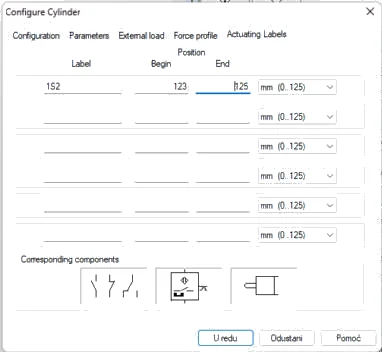
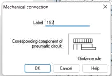
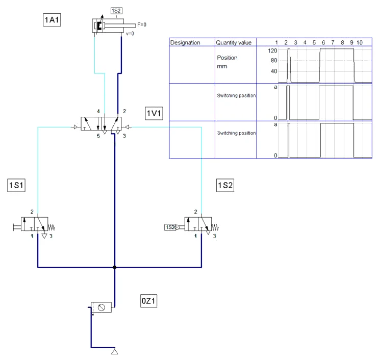
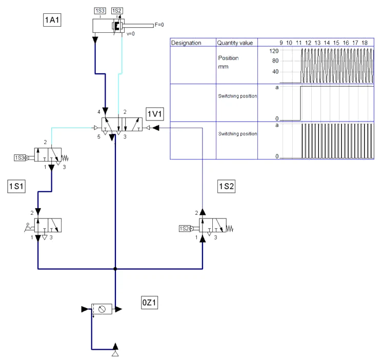
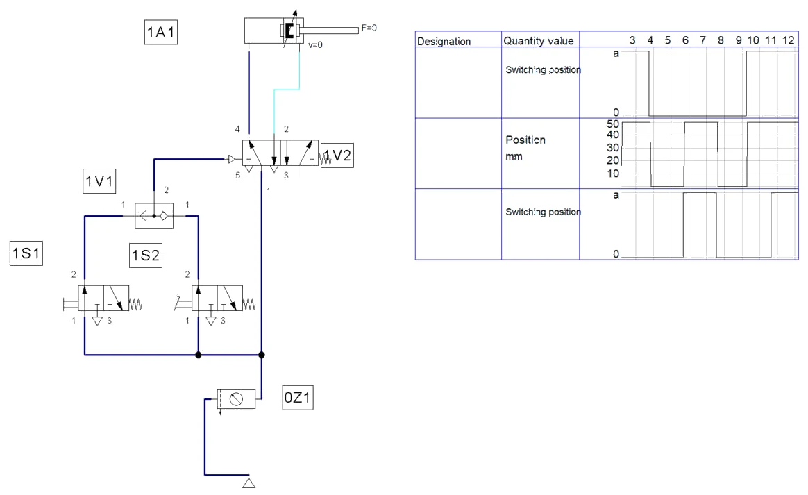
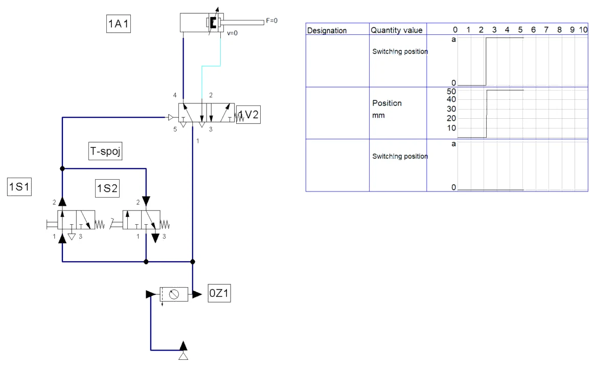
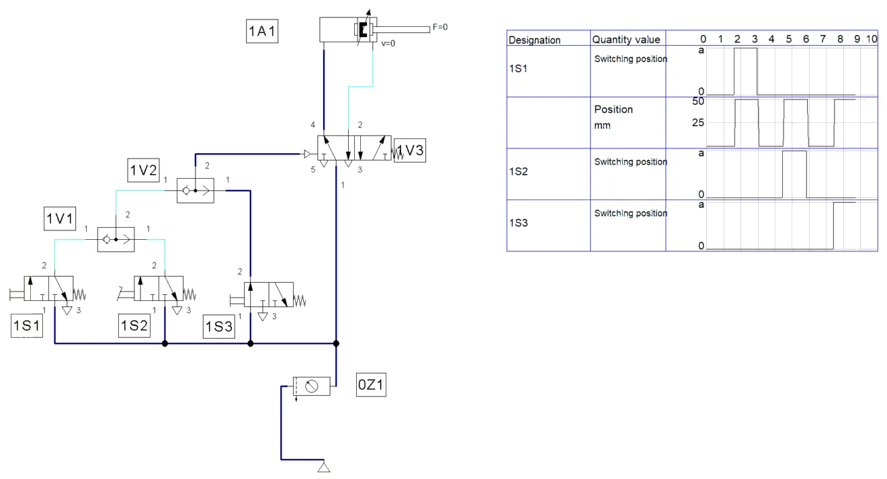

POSTUPAK · RADNI LIST V03 · FLUIDSIM
Postupak V03 · vježbe V5 i V6 · 4 sata
Postupak V03 — granični ventil i funkcija ILI u FluidSIM-u
Cijeli radni list V03 korak po korak: automatski povrat klipnjače graničnim ventilom i bistabilnim razvodnikom, blokirajući signal i neprekidan rad, zatim logička funkcija ILI s naizmjeničnim ventilom i pokus s T-spojnicom. Uz svaki korak su snimke zaslona i potpuna rješenja.
- vezati granični ventil uz položaj na hodu cilindra (Actuating Labels)
- upravljati dvoradnim cilindrom bistabilnim razvodnikom 5/2 i graničnim ventilom
- prepoznati blokirajući signal u simulaciji
- složiti neprekidan rad ventilom s ručicom i zasunom i drugim graničnim ventilom
- složiti funkciju ILI naizmjeničnim ventilom i usporediti je s T-spojnicom
- spremiti shemu, popuniti zapis simulacije i predati rad
O postupku
Ova stranica je postupak za radni list V03: sve što se radi na računalu, od nove sheme do predaje, redom kojim je zadano. Tekst zadatka, sheme, pitanja i rješenja isti su kao na stranicama vježbi V5 Granični ventil — automatski povrat klipnjače i V6 Logička funkcija ILI — naizmjenični ventil; ovdje su dopunjeni koracima u FluidSIM-u i rezultatima simulacije.
Rješenja su skrivena ispod svakog pitanja. Najprije riješite sami, a onda otvorite Prikaži rješenje i usporedite.
Gotove sheme (rješenja) za FluidSIM
- PIH_V05_rjesenje_v01.ct — dio A: shema V5.1 (tipkalo 1S1, granični ventil 1S2, bistabilni razvodnik 1V1), dijagram put–korak
- PIH_V05_z8_rjesenje_v01.ct — dio A, zadatak 8: neprekidan rad (ručica sa zasunom 1S1, granični ventil 1S3)
- PIH_V06_rjesenje_v01.ct — dio B: shema V6.1 (funkcija ILI, naizmjenični ventil 1V1)
- PIH_V06_T_spojnica_v01.ct — dio B: pokus s T-spojnicom
- PIH_V06_z6_rjesenje_v01.ct — dio B, zadatak 6: tri mjesta uključivanja
Datoteke se otvaraju u FluidSIM-P 4 (File → Open). Snimke zaslona napravljene su u FluidSIM-P 4.2 s engleskim sučeljem. Osnove rada u FluidSIM-u (nova shema, knjižnica, crtanje vodova, provjera, simulacija, dijagram put–korak) opisane su u Postupku V01, odjeljak 0.
0 · Prije početka
- File → New (Ctrl + N) otvara novu shemu; Window → Tile Vertically (Shift + F4) postavlja shemu i knjižnicu jednu uz drugu.
- Elemente povucite iz knjižnice na shemu i dvoklikom otvorite njihove dijaloge. Vod crtajte povlačenjem od priključka do priključka; povlačenjem na postojeći vod nastaje račvanje.
- Oznake (1A1, 1V1, 1S1, 0Z1 …) upisuju se elementom Text iz skupine Miscellaneous (uključite Frame Text).
- Execute → Check Superficially (F6) provjerava crtež; Start (F9), Pause (F8), Stop (F5).
- Ručno tipkalo aktivirate klikom mišem (dok držite tipku miša); Shift + klik zadrži ga pritisnutim. Ručica sa zasunom prebacuje se jednim klikom i ostaje u položaju.
- Granični ventil veže se uz cilindar oznakom: dvoklik na cilindar → kartica Actuating Labels → oznaka (npr. 1S2) i položaj na hodu (od–do u mm); ista oznaka upiše se dvoklikom na valjak graničnog ventila (Mechanical connection → Label).
- Dijagram put–korak: iz Miscellaneous povucite State Diagram i na njega povucite cilindre i ventile čije stanje želite pratiti.
Dio A · V5 Granični ventil — automatski povrat klipnjače
Zadatak
Na kontrolnom stolu ljevaonice kontrolor pregledava male tlačne odljevke mase do 3 kg. Kada nađe neispravan komad, postavi ga pred izbacivač i kratko pritisne tipkalo 1S1. Dvoradni cilindar 1A1 Ø25/10 mm s hodom 125 mm gurne odljevak u kutiju za škart i sam se vrati kada dosegne prednji krajnji položaj. Kontrolor ne mora držati tipkalo, a cilindar mora uvijek izvesti puni hod.
Cilindrom upravlja bistabilni razvodnik 5/2 (1V1) s dva pneumatska upravljačka priključka, 14 i 12. Signal za izvlačenje daje tipkalo 1S1 (3/2 NC), a signal za povrat granični ventil 1S2 (3/2 NC s valjkom i povratnom oprugom) koji pritisne klipnjača na kraju hoda. Mreža daje 6 bar; kontrolor u prosjeku izbaci šest komada u minuti. Uzmimo da je trenje odljevka o stol μ = 0,3.
Složite sklop, namjestite položaj graničnog ventila, ispitajte ponašanje pri kratkom i pri dugom pritisku tipkala i odgovorite na pitanja.
Sigurnost pri radu
Pažnja
Bistabilni razvodnik pamti posljednji signal: nakon ponovnog puštanja tlaka cilindar se može pomaknuti u položaj koji je razvodnik imao prije odzračivanja, bez pritiska na tipkalo. Prije puštanja tlaka provjerite položaj razvodnika (ručno pomoćno upravljanje) i maknite ruke s puta klipnjače. Granični ventil namještajte samo uz odzračen sustav; valjak ne smije biti graničnik — klipnjača ga pritišće bočnim nastavkom, a ne čelom.
Shema
Na slici V5.1 granični ventil 1S2 nacrtan je dolje, uz ostale signalne elemente, a njegov stvarni položaj označen je crticom s oznakom 1S2 na kraju hoda klipnjače. Iscrtkani obris pokazuje izvučenu klipnjaču. U početnom položaju 1S2 nije pritisnut, pa je nacrtan u mirovanju.
Vježba se radi u FluidSIM-u
Koraci postupka vježbe koji se odnose na spajanje na didaktičkoj ploči i mjerenje štopericom ili manometrom izvode se u simulaciji. Gdje simulacija ne može pokazati pojavu iz pokusa, to je napisano uz korak.
A1 · Shema V5.1 u FluidSIM-u
- File → New, 0Z1 (0,6 MPa). Double acting cylinder: hod 125 mm, Ø 25 / 10 mm. Oznaka 1A1.
- Kartica Actuating Labels cilindra: oznaka 1S2, položaj od 123 do 125 mm (Slika A1.1) — granični ventil je pritisnut na zadnja 2 mm hoda.
- Iz Frequently Used Way Valves → Pneumatically Operated povucite 5/2-way impulse valve (bistabilni razvodnik, priključci 14 i 12). Oznaka 1V1.
- Tipkalo 1S1: 3/2 NC s tipkalom i oprugom (Mechanically Operated ili 3/n Way Valve).
- Granični ventil 1S2: 3/2 NC s valjkom iz Mechanically Operated. Ventil iz knjižnice je servo-upravljan: u dijalogu isključite Piloted. Zatim dvoklik na valjak → Mechanical connection → Label 1S2 (Slika A1.2).
- Spojite: 1S1 (2) → 14, 1S2 (2) → 12, 4 → klipna komora, 2 → prstenasta komora, napajanje svih ventila iz 0Z1. F6, State Diagram s 1A1, 1S1 i 1S2.


A2 · Simulacija: kratki i dugi pritisak
- Start. Kratko pritisnite 1S1: bistabilni razvodnik zadrži položaj, klipnjača izađe do kraja, pritisne 1S2 i vrati se (prvi ciklus na Slici A2.1).
- Pritisnite i držite 1S1: klipnjača dođe do 1S2, ali se ne vraća — na razvodniku istodobno djeluju 14 i 12 (blokirajući signal). Vraća se tek kad otpustite tipkalo (drugi ciklus na Slici A2.1).

Rezultati u tekstu odnose se na našu simulaciju i priložene datoteke; vaša se vremena mogu malo razlikovati ako drukčije namjestite protoke ili otvore prigušnica.
A3 · Pitanja i zadaci
1. Zašto se ovdje koristi bistabilni razvodnik, a ne razvodnik 5/2 s povratnom oprugom?
Prikaži rješenje
Razvodnik s oprugom vratio bi se u mirovanje čim kontrolor otpusti tipkalo, pa bi kratki pritisak dao samo djelomičan hod. Bistabilni razvodnik zadržava položaj i nakon nestanka signala 14 (memorija), pa klipnjača izlazi do kraja i vraća se tek kada signal 12 dođe iz graničnog ventila.
2. Opišite što se događa kada kontrolor drži tipkalo 1S1 pritisnutim i nakon što klipnjača stigne do 1S2. Kako se takav signal naziva?
Prikaži rješenje
Na razvodniku istodobno djeluju signal 14 (tipkalo) i signal 12 (granični ventil). Kod bistabilnog razvodnika s jednakim upravljačkim površinama zadržava se položaj koji je prvi postavljen, pa klipnjača ostaje izvučena dok se tipkalo ne otpusti; tek tada signal 12 vraća klipnjaču. Signal 14 koji traje i onda kad bi ga trebalo nestati je blokirajući (preklapajući) signal. Rješava se skraćivanjem signala, npr. ventilom s jednosmjernim valjkom ili kasnije metodama upravljanja (VDMA, kaskadna).
U FluidSIM-u
Vidi Sliku A2.1: dok je tipkalo pritisnuto, klipnjača stoji u prednjem položaju, a granični ventil 1S2 je pritisnut.
3. Kolika je sila izvlačenja cilindra pri 6 bar (η = 0,9) i je li dovoljna za guranje odljevka od 3 kg?
Prikaži rješenje
A = π · 25² / 4 = 490,9 mm²; F = 0,6 · 490,9 · 0,9 = 265 N.
Sila trenja odljevka: Ftr = μ · m · g = 0,3 · 3 · 9,81 = 8,8 N. Sila je 30 puta veća od potrebne; cilindar je izabran prema krutosti klipnjače i vodilice za hod 125 mm, a ne prema sili. Zato je prikladno ograničiti brzinu prigušno-nepovratnim ventilom kako odljevak ne bi odletio.
4. Kroz razvodnik u cilindar ulazi približno 40 Nl/min. Kolika je srednja brzina izvlačenja i koliko traje izvlačenje, a koliko uvlačenje (uz isti protok)?
Prikaži rješenje
40 Nl/min = 666 700 Nmm³/s. Obujam pri radnom tlaku: 666 700 / 6,923 = 96 300 mm³/s.
Izvlačenje: v = 96 300 / 490,9 = 196 mm/s; t = 125 / 196 = 0,64 s.
Uvlačenje: Apr = 490,9 − 78,5 = 412,3 mm²; v = 96 300 / 412,3 = 234 mm/s; t = 0,54 s. Uvlačenje je brže jer se puni manja prstenasta površina.
5. Izračunajte potrošnju zraka po ciklusu i u minuti (6 ciklusa/min).
Prikaži rješenje
V = (490,9 + 412,3) · 125 · 6,923 / 10⁶ = 0,78 Nl po ciklusu; u minuti 6 · 0,78 = 4,7 Nl/min (bez vodova).
6. Što se događa ako se 1S2 postavi 20 mm prije kraja hoda? A ako se postavi tako da ga klipnjača nikada ne dosegne?
Prikaži rješenje
Ako je 1S2 20 mm prije kraja, klipnjača se vraća nakon približno 105 mm hoda — hod je kraći, a zbog vremena prebacivanja razvodnika klip se ipak pomakne još nekoliko milimetara. Tako se granični ventil može koristiti i za namjerno skraćenje hoda. Ako ga klipnjača ne dosegne, signal 12 nikad ne dolazi: klipnjača ostaje izvučena, a sklop „stoji" u koraku izvlačenja. To je tipičan kvar nakon pomicanja nosača ventila.
U FluidSIM-u
U kartici Actuating Labels cilindra pomaknite oznaku 1S2 na 103–105 mm i ponovite simulaciju; pa u dijagramu provjerite da je hod kraći. Zatim oznaku izbrišite i provjerite drugi dio odgovora.
7. Nakon ponovnog puštanja tlaka ujutro cilindar je sam izašao, iako nitko nije pritisnuo tipkalo. Objasnite uzrok i predložite mjeru.
Prikaži rješenje
Sustav je prethodni dan odzračen dok je razvodnik 1V1 bio u položaju „izvlačenje" (npr. zbog prekida rada usred ciklusa). Bistabilni razvodnik zadržao je taj položaj i bez tlaka, pa je puštanjem tlaka cilindar odmah izašao. Mjere: prije isključenja završiti ciklus; koristiti uklopni ventil s postupnim puštanjem tlaka; u složenijim sklopovima dodati signal početnog položaja koji pri uključenju postavlja razvodnik u „uvučeno".
8. Za ispitivanje trajnosti cilindar treba raditi neprekidno dok je uključen ventil s ručicom i zasunom 1S1. Dopunite shemu drugim graničnim ventilom 1S3 u stražnjem krajnjem položaju i nacrtajte je.
Prikaži rješenje
Ventil 1S1 s ručicom i zasunom ne daje signal izravno na 14, nego napaja granični ventil 1S3, koji je pritisnut kada je klipnjača uvučena. Dok je 1S1 uključen, svaki povratak klipnjače pritisne 1S3 i daje novi signal 14. Budući da je 1S3 u početnom položaju pritisnut, nacrtan je u aktiviranom položaju (priključci na lijevom polju). Isključenjem 1S1 cilindar dovršava započeti ciklus i ostaje uvučen.
U FluidSIM-u
- 1S1 zamijenite ventilom 3/2 NC s ručicom sa zasunom (u dijalogu Manually = lever with detent, desno bez opruge).
- Dodajte granični ventil 1S3 (3/2 NC, valjak, bez Piloted); na cilindru oznaka 1S3 na 0–2 mm (stražnji položaj).
- Spoj: 1S1 (2) → 1S3 (1), 1S3 (2) → 14. Start, klik na ručicu: cilindar radi neprekidno; drugi klik završi započeti ciklus i stane (Slika A3.1).

Dio B · V6 Logička funkcija ILI — naizmjenični ventil
Zadatak
U pogonu za preradu plastike granulat se iz lijevka dozira u vreće. Na dnu lijevka je zaklopka koju preko poluge zakreće dvoradni cilindar 1A1 Ø32/12 mm s hodom 50 mm. Zaklopka je otvorena dok traje signal, a zatvara se kad signal nestane. Radnik zaklopku otvara ili tipkalom 1S1 na upravljačkoj ploči, ili nožnim ventilom 1S2 uz mjesto punjenja, kada objema rukama drži vreću.
Oba signalna elementa su ventili 3/2 NC. Njihovi signali spajaju se u naizmjeničnom ventilu 1V1 (ventil ILI), čiji izlaz upravlja razvodnikom 5/2 s pneumatskim upravljanjem i povratnom oprugom (1V2). Za zakretanje zaklopke uz trenje granulata treba moment od 12 N·m, a krak poluge je 40 mm (uzmimo da je krak tijekom hoda približno stalan). Mreža daje 6 bar; zaklopka se otvara oko 40 puta u satu.
Složite sklop, provjerite tablicu stanja, pokušajte isti zadatak riješiti T-spojnicom i objasnite razliku.
Sigurnost pri radu
Pažnja
Spajajte samo odzračen sustav i nosite zaštitne naočale. Kod pokusa s T-spojnicom zrak će čujno izlaziti kroz ispuh nepritisnutog ventila — to je očekivano, ali ne usmjeravajte ispuh prema licu. Na stvarnoj napravi zaklopka lijevka može prignječiti ruku u otvoru: ruke se nikad ne stavljaju u otvor lijevka dok je sustav pod tlakom, bez obzira na to s koliko se mjesta zaklopka može otvoriti.
Shema
Naizmjenični ventil ima dva ulaza označena brojem 1 i jedan izlaz 2. Kuglica (ili pločica) zatvara onaj ulaz na kojem nema tlaka, pa zrak iz aktivnog ulaza ide samo prema izlazu. Na slici V6.1 izlaz 2 ventila 1V1 vodi na upravljački priključak 14 razvodnika 1V2.
Vježba se radi u FluidSIM-u
Koraci postupka vježbe koji se odnose na spajanje na didaktičkoj ploči i mjerenje štopericom ili manometrom izvode se u simulaciji. Gdje simulacija ne može pokazati pojavu iz pokusa, to je napisano uz korak.
B1 · Shema V6.1 u FluidSIM-u
- File → New, 0Z1 (0,6 MPa). Dvoradni cilindar 1A1: hod 50 mm, Ø 32 / 12 mm.
- 1S1: 3/2 NC s tipkalom i oprugom; 1S2: 3/2 NC s papučicom (u dijalogu Manually = pedal).
- Iz Shutoff Valves and Flow Control Valves povucite Shuttle valve (naizmjenični ventil) — 1V1. Izlaz 2 vodi na priključak 14 razvodnika 5/2 s pneumatskim upravljanjem i oprugom (1V2).
- Spojite 1S1 (2) i 1S2 (2) na dva ulaza 1V1, napajanje iz 0Z1. F6, State Diagram s 1V2 (Switching position), 1A1 i 1S2.
- Start i ispitajte sva četiri stanja: ništa, samo 1S1, samo 1S2, oba (oba: Shift + klik na 1S1, pa držite 1S2) (Slika B1.1).

Rezultati u tekstu odnose se na našu simulaciju i priložene datoteke; vaša se vremena mogu malo razlikovati ako drukčije namjestite protoke ili otvore prigušnica.
B2 · Pokus s T-spojnicom
- Shemu spremite pod drugim imenom i naizmjenični ventil obrišite. Izlaze 1S1 i 1S2 spojite u jednu točku (račvanje) i odatle na 14 — to je T-spojnica.
- Start i pritisnite samo 1S1. Strelice toka pokazuju da zrak izlazi kroz ispuh 3 nepritisnutog ventila 1S2 (Slika B2.1).

Što simulacija pokazuje, a što ne
FluidSIM ispravno pokazuje put zraka kroz ispuh drugog ventila. Pad tlaka na 14 u simulaciji je malen, pa razvodnik ipak prebaci; na stvarnom sklopu s dugim vodovima i malim ventilima tlak padne više i razvodnik prebacuje nesigurno ili nikako (pitanje 2).
B3 · Pitanja i zadaci
1. Popunite tablicu stanja funkcije ILI za ulaze 1S1 i 1S2 i izlaz (signal na 14). Kako glasi logički izraz?
Prikaži rješenje
0 0 → 0; 1 0 → 1; 0 1 → 1; 1 1 → 1. Izlaz je 1 ako je barem jedan ulaz 1: Y = 1S1 ∨ 1S2 (čita se „1S1 ili 1S2"). Klipnjača je izvučena, a zaklopka otvorena, u tri od četiri stanja.
2. Objasnite što ste vidjeli u koraku 5, kada su signali spojeni T-spojnicom.
Prikaži rješenje
Nepritisnut ventil 3/2 NC u mirovanju spaja svoj izlaz 2 s ispuhom 3. Kroz T-spojnicu zrak iz pritisnutog 1S1 zato odlazi kroz 1S2 u okolinu. Tlak na 14 ostaje nizak (ovisno o otporima, često ispod tlaka prebacivanja), razvodnik ne prebacuje ili prebacuje nesigurno, a iz ispuha 1S2 čujno izlazi zrak. Naizmjenični ventil zatvara upravo taj put prema ispuhu drugog ventila.
U FluidSIM-u
Vidi Sliku B2.1: kroz ispuh 3 nepritisnutog ventila 1S2 izlazi zrak.
3. Kolika sila treba na klipnjači za moment od 12 N·m na kraku 40 mm? Je li Ø32 pri 6 bar dovoljan i koji je najmanji tlak pri kojem još radi (η = 0,9)?
Prikaži rješenje
F = M / r = 12 N·m / 0,040 m = 300 N.
A = 804,2 mm²; Fizv = 0,6 · 804,2 · 0,9 = 434 N — dovoljno, uz rezervu od 45 %.
pmin = 300 / (804,2 · 0,9) = 0,414 N/mm² = 4,1 bar. Kad bi se zaklopka otvarala uvlačenjem, računalo bi se s prstenastom površinom: 0,6 · 691,2 · 0,9 = 373 N, što je također dovoljno.
4. Pri koraku 6 na jednom je ulazu 3 bar, a na drugom 6 bar. Koliki je tlak na izlazu i zašto?
Prikaži rješenje
Na izlazu je 6 bar. Viši tlak potisne kuglicu prema ulazu s nižim tlakom i zatvori ga, pa na izlaz prolazi samo zrak višeg tlaka. Naizmjenični ventil tako „bira" veći od dvaju tlakova, što se koristi i u hidraulici, npr. za dojavu najvećeg tlaka opterećenja.
5. Izračunajte potrošnju zraka cilindra po jednom otvaranju i zatvaranju te u satu (40 ciklusa).
Prikaži rješenje
V = (804,2 + 691,2) · 50 · 6,923 / 10⁶ = 0,52 Nl po ciklusu; u satu 40 · 0,52 = 20,7 Nl. Potrošnja signalnog dijela zanemariva je prema ovoj vrijednosti.
6. Zaklopku treba moći otvoriti s još jednog mjesta, tipkalom 1S3 na drugoj strani lijevka. Nacrtajte signalni dio sheme.
Prikaži rješenje
Jedan naizmjenični ventil ima samo dva ulaza, pa se za tri signala spajaju dva naizmjenična ventila u nizu: 1V1 povezuje 1S1 i 1S2, a 1V2 povezuje izlaz ventila 1V1 i signal 1S3. Izlaz 1V2 vodi na 14 razvodnika, koji sada nosi oznaku 1V3. Za n ulaza potrebno je n − 1 naizmjeničnih ventila.
U FluidSIM-u
- Dodajte tipkalo 1S3 i drugi naizmjenični ventil. 1V1 povezuje 1S1 i 1S2, 1V2 povezuje izlaz 1V1 i 1S3, izlaz 1V2 vodi na 14 razvodnika 1V3.
- Start: klipnjača izlazi uz bilo koje od triju tipkala (Slika B3.1).

7. Kada radnik pritisne nožni ventil, iz ispuha tipkala 1S1 na ploči čuje se slabo puhanje, a zaklopka se otvara sporije nego prije. Što je vjerojatni kvar?
Prikaži rješenje
Sjedište naizmjeničnog ventila na strani 1S1 ne brtvi (istrošena ili onečišćena kuglica ili brtva). Dio signala iz 1S2 tada odlazi natrag kroz 1S1 i njegov ispuh 3, kao kod T-spojnice, samo u manjoj mjeri. Tlak na 14 je niži i razvodnik prebacuje sporije. Provjera: manometar na izlazu 1V1 pokazuje manji tlak pri pritisku na 1S2 nego pri pritisku na 1S1. Ventil se čisti ili zamjenjuje.
8. Kolega predlaže da se umjesto naizmjeničnog ventila ugrade dva nepovratna ventila, svaki okrenut prema razvodniku. Hoće li sklop raditi?
Prikaži rješenje
Uključivanje bi radilo: nepovratni ventili propuštaju signal prema 14 i sprječavaju odlazak kroz drugi signalni ventil. Ali nakon otpuštanja tipkala zrak iz upravljačkog voda i komore priključka 14 ne može izaći, jer ga nepovratni ventili zadržavaju. Razvodnik bi ostao prebačen i zaklopka otvorena. Naizmjenični ventil pri nestanku signala pušta upravljački vod da se isprazni natrag kroz signalni ventil koji je bio aktivan.
Zapis simulacije
Tablica Zapis: simulacija iz radnog lista, popunjena prema simulaciji u FluidSIM-P 4.2 (rješenje).
| Veličina | Očekivano (proračun / zadatak) | FluidSIM | Komentar |
|---|---|---|---|
| Redoslijed gibanja (A) | kratki pritisak 1S1 → 1A1+, 1S2 → 1A1− | isto (Slika A2.1) | pun hod i uz kratki dodir |
| Dugi pritisak (A) | klipnjača ostaje vani dok se drži 1S1 | isto (Slika A2.1) | blokirajući signal |
| Neprekidan rad (A, z. 8) | dok je 1S1 uključen, ciklusi se ponavljaju | isto (Slika A3.1) | 1S3 na 0–2 mm |
| Tablica ILI (B) | 0 0 → 0; 1 0 → 1; 0 1 → 1; 1 1 → 1 | isto (Slika B1.1) | — |
| T-spojnica (B) | zrak izlazi kroz ispuh 1S2, tlak na 14 pada | zrak izlazi kroz ispuh 3 ventila 1S2 | u simulaciji 1V2 ipak prebaci |
| Tlak | 6 bar | 0Z1 = 0,6 MPa | — |
Spremanje i predaja
- File → Save As. U polje Naziv datoteke upišite
PIH_2026-2027_Prezime_Ime_V03.ct(bez kvačica) i kliknite Spremi. Kasnije spremanje: File → Save (Ctrl + S). - Snimka: za vrijeme simulacije (nakon Pause) snimite zaslon sa shemom i dijagramom put–korak (u sustavu Windows: Windows + Shift + S), ili shemu spremite naredbom File → TIFF Export.
- Ispunite radni list (proračuni i zapis simulacije).
- Predajte u sustav za e-učenje: shemu
.ct, snimku zaslona simulacije i ispunjen radni list. Sve datoteke imenujtePIH_2026-2027_Prezime_Ime_….
Primjena na vlastiti zadatak P##
Projekt SL-3, vaša varijanta P## (ulazni podaci u „Projektni zadaci P01–P21”): proračun svoje varijante — moment savijanja M = Rm·b·s²/3, Mp = 1,5·M, kut zakreta i najmanji krak poluge, sila na cilindru B, najmanji promjer pri 6 bar (η = 0,9), izbor promjera tako da savija i pri 5 bar, potrošnja zraka po ciklusu i u minuti za svoj takt. Postupak je na stranici Projektni zadatak: naprava SL-3 za savijanje lima, odjeljak 5.
Kod pitanja: susjed → radni list i ova stranica → nastavnik. AI smijete koristiti uz navođenje što je i kako napravljeno.
Za nastavnika
Dio A · vježba V5
Otvori upute za nastavnika
Priprema
Vježba traje 2 sata (2 × 45 min). Na cilindar unaprijed pričvrstite nastavak (kulisu) za pritiskanje valjka i provjerite da nosači graničnih ventila dopuštaju pomak duž hoda. Pripremite i jedan ventil s jednosmjernim valjkom, ako postoji, kako bi se mogao pokazati uz zadatak 2. Za zadatak 7 dovoljno je na kraju sata odzračiti sustav dok je cilindar izvučen i zatim ponovno pustiti tlak.
Tijek sata
- Uvod: memorija bistabilnog razvodnika, granični ventil i crtanje njegova položaja na shemi — 10 min.
- Simulacija i dijagram put–korak, pokus s dugim pritiskom tipkala — 10 min.
- Spajanje i namještanje graničnog ventila — 20 min.
- Ispitivanje (koraci 5–7) i bilježenje opažanja — 20 min.
- Inačica za neprekidan rad — 15 min.
- Računski zadaci, pokus iz zadatka 7, pospremanje — 15 min.
Očekivani rezultati
Kratkim pritiskom cilindar izvodi puni hod i vraća se sam. Dugim pritiskom klipnjača ostaje izvučena dok se tipkalo ne otpusti. Pomakom 1S2 skraćuje se hod. Računski: 265 N prema 8,8 N trenja; 0,64 s izvlačenje, 0,54 s uvlačenje; 0,78 Nl po ciklusu, 4,7 Nl/min.
Česte pogreške
- Granični ventil postavljen je tako da ga čelo klipnjače pritišće kao graničnik, pa se valjak oštećuje.
- Signal 1S2 spojen je na 14 umjesto na 12, pa cilindar ne reagira ili njiše.
- Granični ventil nije napojen iz razdjelnog bloka (priključak 1 slobodan), pa ne daje signal.
- Granični ventil koji je u početnom položaju pritisnut crta se u mirovanju.
Vrednovanje
| Kriterij | Bodovi |
|---|---|
| Ispravan spoj i namješten granični ventil (puni hod, bez udara u valjak) | 5 |
| Opis i objašnjenje ponašanja pri dugom pritisku tipkala | 3 |
| Pokus s pomaknutim graničnim ventilom, izmjereni hod | 2 |
| Računski zadaci 3, 4 i 5 | 5 |
| Shema i ispitivanje neprekidnog rada, odgovor na zadatak 7 | 5 |
| Ukupno | 20 |
Dio B · vježba V6
Otvori upute za nastavnika
Priprema
Vježba traje 2 sata (2 × 45 min). Pripremite po skupini dva naizmjenična ventila, T-spojnicu i manometar s T-spojnicom. Pokus s T-spojnicom je najvažniji dio sata: polaznici trebaju sami čuti i izmjeriti gubitak tlaka. Za korak 6 potreban je zaseban regulator; ako ga nema, pokus pokažite jednom za cijelu skupinu.
Tijek sata
- Uvod: logičke funkcije u pneumatici, simbol i rad naizmjeničnog ventila — 10 min.
- Simulacija i tablica stanja — 10 min.
- Spajanje i ispitivanje četiriju stanja s manometrom — 20 min.
- Pokus s T-spojnicom i pokus s različitim tlakovima — 20 min.
- Proširenje na tri mjesta uključivanja — 15 min.
- Računski zadaci, rasprava o zadacima 7 i 8, pospremanje — 15 min.
Očekivani rezultati
Tablica stanja ILI potvrđena mjerenjem: u tri stanja tlak na 14 je oko 6 bar. S T-spojnicom tlak na 14 znatno pada, a iz ispuha nepritisnutog ventila izlazi zrak. Pri različitim ulaznim tlakovima na izlazu je viši tlak. Računski: 300 N potrebno, 434 N raspoloživo, najmanje 4,1 bar; 0,52 Nl po ciklusu, 20,7 Nl u satu.
Česte pogreške
- Izlaz naizmjeničnog ventila (2) zamijeni se s jednim od ulaza (1).
- Signalni ventili nisu napojeni iz razdjelnog bloka, nego jedan iz drugoga.
- Za tri ulaza traži se „trostruki" naizmjenični ventil umjesto dvaju u nizu.
- Pokus s T-spojnicom tumači se kao kvar ventila 1S2, a ne kao posljedica spoja.
Vrednovanje
| Kriterij | Bodovi |
|---|---|
| Ispravan spoj i izmjerena tablica stanja | 5 |
| Pokus s T-spojnicom: zapis tlaka i objašnjenje | 4 |
| Računski zadaci 3 i 5 | 4 |
| Shema i ispitivanje s tri mjesta uključivanja | 4 |
| Odgovori na pitanja 4, 7 i 8 | 3 |
| Ukupno | 20 |
Napomena za FluidSIM
Gotove sheme za usporedbu su gore na stranici. Ventil s valjkom iz knjižnice FluidSIM-a je servo-upravljan — studenti trebaju isključiti Piloted, inače granični ventil ne radi kako je nacrtano u shemi. Pokus s T-spojnicom u simulaciji pokazuje put zraka kroz ispuh, ali razvodnik ipak prebaci; razliku prema stvarnom sklopu vrijedi istaknuti.